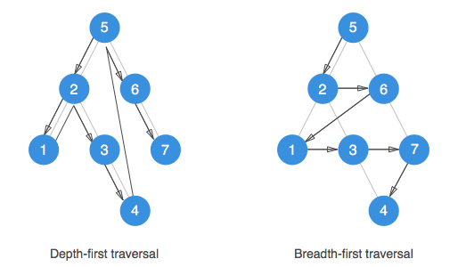
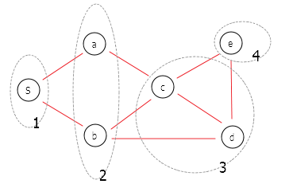
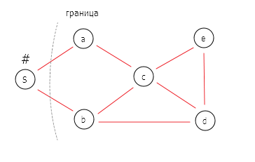
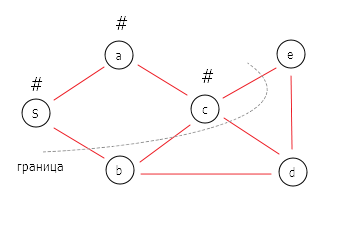
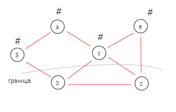
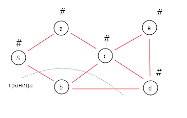

Поиск в ширину и поиск в глубину представляют две основных парадигмы обхода графов.
Поиск в ширину (breadth-first search, BFS)
Алгоритм поиска в ширину заключается в том, чтобы разведать вершины графа послойно, в порядке увеличения расстояния от стартовой ноды.
Рассмотрим на примере и возьмем для этого простой связный ненаправленный граф, ребра которого не имеют весов или временных меток. Слой 0 содержит стартовую вершину. Слой 1 будет содержать множество вершин, которые находятся на расстояние одного ребра от стартовой. Каждый последующий слой будет удаляться от стартовой вершины ровно на одно ребро. Алгоритм разведает сначала все ближайшие к стартовой ноды, затем более удаленные и т.д. и завершит работу, когда будут разведаны все вершины и алгоритм не сможет пройти дальше. В нашем примере он остановится на слое 3.

Алгоритм реализуется на основе очереди FIFO (First In, First Out – «Первым пришёл — первым ушёл»), с помощью которого отслеживаются ноды, которые алгоритм уже посещал. Очередь позволяет добавлять объекты в конец списка и удалять объекты из начала за постоянное время.
BFS алгоритм
Вход: граф , где это множество нод, а множество ребер. Стартовая вершина .
Выход граф , при условии, что каждая вершина такого графа достижима из s тогда и только тогда, когда она размечена алгоритмом как «разведанная».
- пометить s как разведанную вершину, все остальные как неразведанные
- определить очередь , инициализированную вершиной s
- до тех пор, пока очередь непустая:
- удалить вершину из начала очереди , обозначив ее как v
- для каждого ребра в списке смежности v:
- если w не разведана:
- пометить w как разведанную
- добавить w в конец
BFS используется для поиска кратчайшего пути и связных компонент в графе.
Поиск в глубину (depth-first search, DFS)
Алгоритм поиска в глубину отличается от поиска в ширину более агрессивным продвижением по графу. Он всегда сразу продвигается к самой отдаленной от стартовой ноды вершине и затем, если не может продвинуться дальше, отступает назад.
Как и BFS, DFS помечает ноду каждый раз, как ее обнаруживает. На каждой итерации алгоритм обходит в произвольном порядке ноды, ближайшие к текущей. На первой же найденной вершине алгоритм будет пытаться найти ближайшие ноды к уже разведанной (в этом он отличается от BFS, который исследует ноды, ближайшие к стартовой) и будет делать это на каждой последующей итерации до тех пор, пока не окажется в ноде, из которой ему некуда уйти. Тогда алгоритм отступает назад и пытается продвинуться дальше по другому пути. Алгоритм так же останавливается, когда все доступные ноды будут разведаны.
   
DFS реализуется на основе стека LIFO (last in, first out, «последним пришёл — первым ушёл»).
DFS алгоритм
Вход: граф , где это множество нод, а множество ребер. Стартовая вершина .
Выход граф , при условии, что каждая вершина такого графа достижима из s тогда и только тогда, когда она размечена алгоритмом как «разведанная».
- пометить s как разведанную вершину, все остальные как неразведанные
- определить стек , инициализированную вершиной s
- до тех пор, пока стек непустой:
- удалить вершину сверху стека , обозначив ее как v
- если v не разведана:
- пометить v как разведанную
- для каждого ребра в списке смежности v:
- добавить w наверх стека
Кроме того, алгоритм может быть реализован рекурсивно.
DFS используется для топологической сортировки и определения сильно связанных компонент графа.
Свойства алгоритмаов DFS и DFS
- вершина размечается как разведанная тогда и только тогда, когда существует путь из s в v в графе
- время работы алгоритма , где , а (для представления графа в виде списков смежности. Для матрицы смежности сложность составит )